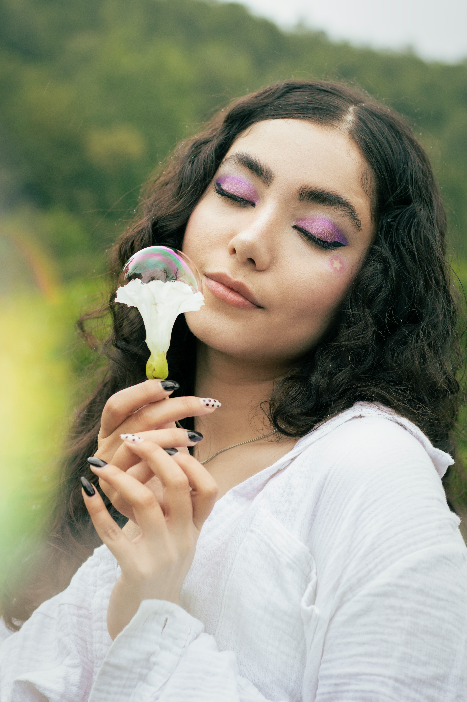
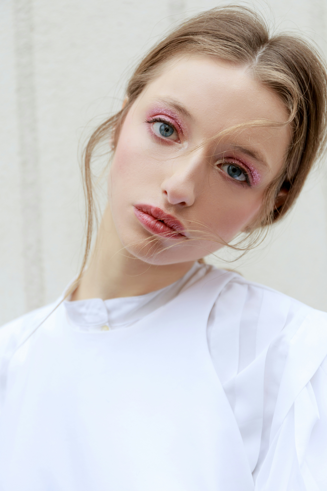

Nuestros valores
- Calidad profesional
- Productos Cruelty-Free
- Ingredientes seguros
- Respeto por la piel natural
“El maquillaje no es una máscara, es una forma de expresión.” – Lunare Beauty

Lunare es una marca de maquillaje inspirada en la elegancia, el arte y la belleza consciente.
Nuestros productos buscan resaltar la autenticidad de cada persona.
Como decía una artista del maquillaje:
La belleza comienza en el momento en que decides ser tú misma
.

“El maquillaje no es una máscara, es una forma de expresión.” – Lunare Beauty